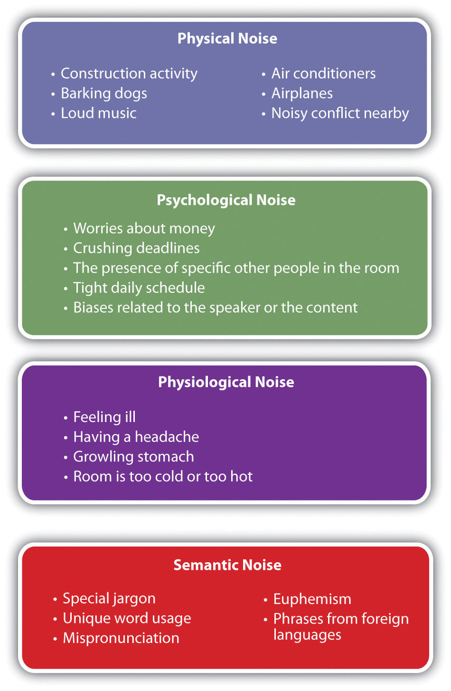
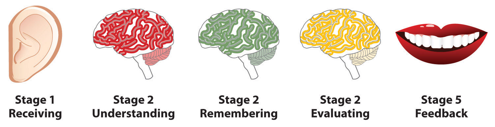

“Are you listening to me?” This question is often asked because the speaker thinks the listener is nodding off or daydreaming. We sometimes think that listening means we only have to sit back, stay barely awake, and let a speaker’s words wash over us. While many Americans look upon being active as something to admire, to engage in, and to excel at, listening is often understood as a “passive” activity. More recently, O, the Oprah Magazine featured a cover article with the title, “How to Talk So People Really Listen: Four Ways to Make Yourself Heard.” This title leads us to expect a list of ways to leave the listening to others and insist that they do so, but the article contains a surprise ending. The final piece of advice is this: “You can’t go wrong by showing interest in what other people say and making them feel important. In other words, the better you listen, the more you’ll be listened to.”Jarvis, T. (2009, November). How to talk so people really listen: Four ways to make yourself heard. O, the Oprah Magazine. Retrieved from http://www.oprah.com/relationships/Communication-Skills-How-to-Make-Yourself-Heard
You may have heard the adage, “We have two ears but only one mouth”—an easy way to remember that listening can be twice as important as talking. As a student, you most likely spend many hours in a classroom doing a large amount of focused listening, yet sometimes it is difficult to apply those efforts to communication in other areas of your life. As a result, your listening skills may not be all they could be. In this chapter, we will examine listening versus hearing, listening styles, listening difficulties, listening stages, and listening critically.
HearingAn accidental and automatic brain response to sound. is an accidental and automatic brain response to sound that requires no effort. We are surrounded by sounds most of the time. For example, we are accustomed to the sounds of airplanes, lawn mowers, furnace blowers, the rattling of pots and pans, and so on. We hear those incidental sounds and, unless we have a reason to do otherwise, we train ourselves to ignore them. We learn to filter out sounds that mean little to us, just as we choose to hear our ringing cell phones and other sounds that are more important to us.
Figure 4.1 Hearing vs. Listening

Listening, on the other hand, is purposeful and focused rather than accidental. As a result, it requires motivation and effort. ListeningFocused, concentrated attention for the purpose of understanding the meanings expressed by a speaker., at its best, is active, focused, concentrated attention for the purpose of understanding the meanings expressed by a speaker. We do not always listen at our best, however, and later in this chapter we will examine some of the reasons why and some strategies for becoming more active critical listeners.
Listening should not be taken for granted. Before the invention of writing, people conveyed virtually all knowledge through some combination of showing and telling. Elders recited tribal histories to attentive audiences. Listeners received religious teachings enthusiastically. Myths, legends, folktales, and stories for entertainment survived only because audiences were eager to listen. Nowadays, however, you can gain information and entertainment through reading and electronic recordings rather than through real-time listening. If you become distracted and let your attention wander, you can go back and replay a recording. Despite that fact, you can still gain at least four compelling benefits by becoming more active and competent at real-time listening.
When you focus on the material presented in a classroom, you will be able to identify not only the words used in a lecture but their emphasis and their more complex meanings. You will take better notes, and you will more accurately remember the instructor’s claims, information, and conclusions. Many times, instructors give verbal cues about what information is important, specific expectations about assignments, and even what material is likely to be on an exam, so careful listening can be beneficial.
When you give your best attention to people expressing thoughts and experiences that are important to them, those individuals are likely to see you as someone who cares about their well-being. This fact is especially true when you give your attention only and refrain from interjecting opinions, judgments, and advice.
When you listen well to others, you reveal yourself as being curious and interested in people and events. In addition, your ability to understand the meanings of what you hear will make you a more knowledgeable and thoughtful person.
When you listen well to others, you start to pick up more on the stylistic components related to how people form arguments and present information. As a result, you have the ability to analyze what you think works and doesn’t work in others’ speeches, which can help you transform your speeches in the process. For example, really paying attention to how others cite sources orally during their speeches may give you ideas about how to more effectively cite sources in your presentation.
If listening were easy, and if all people went about it in the same way, the task for a public speaker would be much easier. Even Aristotle, as long ago as 325 BC, recognized that listeners in his audience were varied in listening styleThe preferred focus of a listener’s attention in a given situation. An effective listener is able to adapt his or her listening style to the context.. He differentiated them as follows:
Rhetoric falls into three divisions, determined by the three classes of listeners to speeches. For of the three elements in speech-making—speaker, subject, and person addressed—it is the last one, the hearer, that determines the speech’s end and object. The hearer must be either a judge, with a decision to make about things past or future, or an observer. A member of the assembly decides about future events, a juryman about past events: while those who merely decide on the orator’s skill are observers.Aristotle. (c. 350 BCE). Rhetoric (W. Rhys Roberts, Trans.). Book I, Part 3, para. 1. Retrieved from http://classics.mit.edu/Aristotle/rhetoric.1.i.html
Thus Aristotle classified listeners into those who would be using the speech to make decisions about past events, those who would make decisions affecting the future, and those who would evaluate the speaker’s skills. This is all the more remarkable when we consider that Aristotle’s audiences were composed exclusively of male citizens of one city-state, all prosperous property owners.
Our audiences today are likely to be much more heterogeneous. Think about the classroom audience that will listen to your speeches in this course. Your classmates come from many religious and ethnic backgrounds. Some of them may speak English as a second language. Some might be survivors of war-torn parts of the world such as Bosnia, Darfur, or northwest China. Being mindful of such differences will help you prepare a speech in which you minimize the potential for misunderstanding.
Part of the potential for misunderstanding is the difference in listening styles. In an article in the International Journal of Listening, Watson, Barker, and WeaverWatson, K. W., Barker, L. L., & Weaver, J. B., III. (1995). The listening styles profile (LSP-16): Development and validation of an instrument to assess four listening styles. International Journal of Listening, 9, 1–13. identified four listening styles: people, action, content, and time.
The people-oriented listenerListening that is focused on the speaker. The listener is most interested in the personality or experience of the speaker and the parts of the message related to those interests. is interested in the speaker. People-oriented listeners listen to the message in order to learn how the speaker thinks and how they feel about their message. For instance, when people-oriented listeners listen to an interview with a famous rap artist, they are likely to be more curious about the artist as an individual than about music, even though the people-oriented listener might also appreciate the artist’s work. If you are a people-oriented listener, you might have certain questions you hope will be answered, such as: Does the artist feel successful? What’s it like to be famous? What kind of educational background does he or she have? In the same way, if we’re listening to a doctor who responded to the earthquake crisis in Haiti, we might be more interested in the doctor as a person than in the state of affairs for Haitians. Why did he or she go to Haiti? How did he or she get away from his or her normal practice and patients? How many lives did he or she save? We might be less interested in the equally important and urgent needs for food, shelter, and sanitation following the earthquake.
The people-oriented listener is likely to be more attentive to the speaker than to the message. If you tend to be such a listener, understand that the message is about what is important to the speaker.
Action-oriented listenersListening focused on what is expected of the listener. The action-oriented listener is less interested in the underlying rationale than in learning what action to take. are primarily interested in finding out what the speaker wants. Does the speaker want votes, donations, volunteers, or something else? It’s sometimes difficult for an action-oriented speaker to listen through the descriptions, evidence, and explanations with which a speaker builds his or her case.
Action-oriented listening is sometimes called task-oriented listening. In it, the listener seeks a clear message about what needs to be done, and might have less patience for listening to the reasons behind the task. This can be especially true if the reasons are complicated. For example, when you’re a passenger on an airplane waiting to push back from the gate, a flight attendant delivers a brief speech called the preflight safety briefing. The flight attendant does not read the findings of a safety study or the regulations about seat belts. The flight attendant doesn’t explain that the content of his or her speech is actually mandated by the Federal Aviation Administration. Instead, the attendant says only to buckle up so we can leave. An action-oriented listener finds “buckling up” a more compelling message than a message about the underlying reasons.
Content-oriented listenersListening focused on the information and meanings in the message. This listener gives less attention to the speaker than to the message, its meanings, and its credibility. are interested in the message itself, whether it makes sense, what it means, and whether it’s accurate. When you give a speech, many members of your classroom audience will be content-oriented listeners who will be interested in learning from you. You therefore have an obligation to represent the truth in the fullest way you can. You can emphasize an idea, but if you exaggerate, you could lose credibility in the minds of your content-oriented audience. You can advocate ideas that are important to you, but if you omit important limitations, you are withholding part of the truth and could leave your audience with an inaccurate view.
Imagine you’re delivering a speech on the plight of orphans in Africa. If you just talk about the fact that there are over forty-five million orphansin Africa but don’t explain why, you’ll sound like an infomercial. In such an instance, your audience’s response is likely to be less enthusiastic than you might want. Instead, content-oriented listeners want to listen to well-developed information with solid explanations.
People using a time-oriented listeningListening focused on reaching the end of the message. style prefer a message that gets to the point quickly. Time-oriented listeners can become impatient with slow delivery or lengthy explanations. This kind of listener may be receptive for only a brief amount of time and may become rude or even hostile if the speaker expects a longer focus of attention. Time-oriented listeners convey their impatience through eye rolling, shifting about in their seats, checking their cell phones, and other inappropriate behaviors. If you’ve been asked to speak to a group of middle-school students, you need to realize that their attention spans are simply not as long as those of college students. This is an important reason speeches to young audiences must be shorter, or broken up by more variety than speeches to adults.
In your professional future, some of your audience members will have real time constraints, not merely perceived ones. Imagine that you’ve been asked to deliver a speech on a new project to the board of directors of a local corporation. Chances are the people on the board of directors are all pressed for time. If your speech is long and filled with overly detailed information, time-oriented listeners will simply start to tune you out as you’re speaking. Obviously, if time-oriented listeners start tuning you out, they will not be listening to your message. This is not the same thing as being a time-oriented listener who might be less interested in the message content than in its length.
At times, everyone has difficulty staying completely focused during a lengthy presentation. We can sometimes have difficulty listening to even relatively brief messages. Some of the factors that interfere with good listening might exist beyond our control, but others are manageable. It’s helpful to be aware of these factors so that they interfere as little as possible with understanding the message.
NoiseAny internal or environmental factor that interferes with the ability to listen effectively. Some of these factors are physical, psychological, physiological, and semantic. is one of the biggest factors to interfere with listening; it can be defined as anything that interferes with your ability to attend to and understand a message. There are many kinds of noise, but we will focus on only the four you are most likely to encounter in public speaking situations: physical noise, psychological noise, physiological noise, and semantic noise.
Physical noiseVarious sounds in an environment that interfere with a source’s ability to hear. consists of various sounds in an environment that interfere with a source’s ability to hear. Construction noises right outside a window, planes flying directly overhead, or loud music in the next room can make it difficult to hear the message being presented by a speaker even if a microphone is being used. It is sometimes possible to manage the context to reduce the noise. Closing a window might be helpful. Asking the people in the next room to turn their music down might be possible. Changing to a new location is more difficult, as it involves finding a new location and having everyone get there.
Psychological noiseDistractions to a speaker’s message caused by a receiver’s internal thoughts. consists of distractions to a speaker’s message caused by a receiver’s internal thoughts. For example, if you are preoccupied with personal problems, it is difficult to give your full attention to understanding the meanings of a message. The presence of another person to whom you feel attracted, or perhaps a person you dislike intensely, can also be psychosocial noise that draws your attention away from the message.
Physiological noiseDistractions to a speaker’s message caused by a listener’s own body. consists of distractions to a speaker’s message caused by a listener’s own body. Maybe you’re listening to a speech in class around noon and you haven’t eaten anything. Your stomach may be growling and your desk is starting to look tasty. Maybe the room is cold and you’re thinking more about how to keep warm than about what the speaker is saying. In either case, your body can distract you from attending to the information being presented.
Semantic noiseWhen a receiver experiences confusion over the meaning of a source’s word choice. occurs when a receiver experiences confusion over the meaning of a source’s word choice. While you are attempting to understand a particular word or phrase, the speaker continues to present the message. While you are struggling with a word interpretation, you are distracted from listening to the rest of the message. One of the authors was listening to a speaker who mentioned using a sweeper to clean carpeting. The author was confused, as she did not see how a broom would be effective in cleaning carpeting. Later, the author found out that the speaker was using the word “sweeper” to refer to a vacuum cleaner; however, in the meantime, her listening was hurt by her inability to understand what the speaker meant. Another example of semantic noise is euphemism. Euphemism is diplomatic language used for delivering unpleasant information. For instance, if someone is said to be “flexible with the truth,” it might take us a moment to understand that the speaker means this person sometimes lies.
Figure 4.2 Types of Noise
Many distractionsInternal or external factors that interfere with a listener’s ability to give full attention to a message. are the fault of neither the listener nor the speaker. However, when you are the speaker, being aware of these sources of noise can help you reduce some of the noise that interferes with your audience’s ability to understand you.
A person can only maintain focused attention for a finite length of time. In his 1985 book Amusing Ourselves to Death: Public Discourse in the Age of Show Business, New York University’s Steinhardt School of Education professor Neil Postman argued that modern audiences have lost the ability to sustain attention to a message.Postman, N. (1985). Amusing ourselves to death: Public discourse in the age of show business. New York: Viking Press. More recently, researchers have engaged in an ongoing debate over whether Internet use is detrimental to attention spanThe length of time a listener can maintain focused attention to a message..Carr, N. (2010, May 24). The Web shatters focus, rewires brains. Wired Magazine. Retrieved from http://www.wired.com/magazine/2010/05/ff_nicholas_carr/all/1 Whether or not these concerns are well founded, you have probably noticed that even when your attention is “glued” to something in which you are deeply interested, every now and then you pause to do something else, such as getting a drink of water, stretching, or looking out the window.
The limits of the human attention span can interfere with listening, but listeners and speakers can use strategies to prevent this interference. As many classroom instructors know, listeners will readily renew their attention when the presentation includes frequent breaks in pacing.Middendorf, J., & Kalish, A. (1996). The “change-up” in lectures. The National Teaching and Learning Forum, 5(2). For example, a fifty- to seventy-five-minute class session might include some lecture material alternated with questions for class discussion, video clips, handouts, and demonstrations. Instructors who are adept at holding listeners’ attention also move about the front of the room, writing on the board, drawing diagrams, and intermittently using slide transparencies or PowerPoint slides.
If you have instructors who do a good job of keeping your attention, they are positive role models showing strategies you can use to accommodate the limitations of your audience’s attention span.
Good listening involves keeping an open mind and withholding judgment until the speaker has completed the message. Conversely, biased listening is characterized by jumping to conclusions; the biased listener believes, “I don’t need to listen because I already know what I think.” Receiver biasesPreconceived ideas that interfere with accurately understanding and remembering a message. These biases can refer either to the speaker or to the topic. can refer to two things: biases with reference to the speaker and preconceived ideas and opinionsOpinions are beliefs we have about the worth of things we know or believe we know. about the topic or message. Both can be considered noise. Everyone has biases, but good listeners have learned to hold them in check while listening.
The first type of bias listeners can have is related to the speaker. Often a speaker stands up and an audience member simply doesn’t like the speaker, so the audience member may not listen to the speaker’s message. Maybe you have a classmate who just gets under your skin for some reason, or maybe you question a classmate’s competence on a given topic. When we have preconceived notions about a speaker, those biases can interfere with our ability to listen accurately and competently to the speaker’s message.
The second type of bias listeners can have is related to the topic or content of the speech. Maybe the speech topic is one you’ve heard a thousand times, so you just tune out the speech. Or maybe the speaker is presenting a topic or position you fundamentally disagree with. When listeners have strong preexisting opinions about a topic, such as the death penalty, religious issues, affirmative action, abortion, or global warming, their biases may make it difficult for them to even consider new information about the topic, especially if the new information is inconsistent with what they already believe to be true. As listeners, we have difficulty identifying our biases, especially when they seem to make sense. However, it is worth recognizing that our lives would be very difficult if no one ever considered new points of view or new information. We live in a world where everyone can benefit from clear thinking and open-minded listening.
Listening or receiver apprehensionThe listener’s anxiety about his or her ability to understand the information, concepts, or vocabulary in a message. is the fear that you might be unable to understand the message or process the information correctly or be able to adapt your thinking to include the new information coherently.Wheeless, L. R. (1975). An investigation of receiver apprehension and social context dimensions of communication apprehension. Speech Teacher, 24, 261–268. In some situations, you might worry that the information presented will be “over your head”—too complex, technical, or advanced for you to understand adequately.
Many students will actually avoid registering for courses in which they feel certain they will do poorly. In other cases, students will choose to take a challenging course only if it’s a requirement. This avoidance might be understandable but is not a good strategy for success. To become educated people, students should take a few courses that can shed light on areas where their knowledge is limited.
As a speaker, you can reduce listener apprehension by defining terms clearly and using simple visual aids to hold the audience’s attention. You don’t want to underestimate or overestimate your audience’s knowledge on a subject, so good audience analysis is always important. If you know your audience doesn’t have special knowledge on a given topic, you should start by defining important terms. Research has shown us that when listeners do not feel they understand a speaker’s message, their apprehension about receiving the message escalates. Imagine that you are listening to a speech about chemistry and the speaker begins talking about “colligative properties.” You may start questioning whether you’re even in the right place. When this happens, apprehension clearly interferes with a listener’s ability to accurately and competently understand a speaker’s message. As a speaker, you can lessen the listener’s apprehension by explaining that colligative properties focus on how much is dissolved in a solution, not on what is dissolved in a solution. You could also give an example that they might readily understand, such as saying that it doesn’t matter what kind of salt you use in the winter to melt ice on your driveway, what is important is how much salt you use.
Figure 4.3 Stages of Feedback
As you read earlier, there are many factors that can interfere with listening, so you need to be able to manage a number of mental tasks at the same time in order to be a successful listener. Author Joseph DeVito has divided the listening process into five stages: receiving, understanding, remembering, evaluating, and responding.DeVito, J. A. (2000). The elements of public speaking (7th ed.). New York, NY: Longman.
ReceivingThe process of hearing and giving focused attention to a speaker’s message. is the intentional focus on hearing a speaker’s message, which happens when we filter out other sources so that we can isolate the message and avoid the confusing mixture of incoming stimuli. At this stage, we are still only hearing the message. Notice in Figure 4.3 "Stages of Feedback" that this stage is represented by the ear because it is the primary tool involved with this stage of the listening process.
One of the authors of this book recalls attending a political rally for a presidential candidate at which about five thousand people were crowded into an outdoor amphitheater. When the candidate finally started speaking, the cheering and yelling was so loud that the candidate couldn’t be heard easily despite using a speaker system. In this example, our coauthor had difficulty receiving the message because of the external noise. This is only one example of the ways that hearing alone can require sincere effort, but you must hear the message before you can continue the process of listening.
In the understandingThe effort to learn the speaker’s meanings. stage, we attempt to learn the meaning of the message, which is not always easy. For one thing, if a speaker does not enunciate clearly, it may be difficult to tell what the message was—did your friend say, “I think she’ll be late for class,” or “my teacher delayed the class”? Notice in Figure 4.3 "Stages of Feedback" that stages two, three, and four are represented by the brain because it is the primary tool involved with these stages of the listening process.
Even when we have understood the words in a message, because of the differences in our backgrounds and experience, we sometimes make the mistake of attaching our own meanings to the words of others. For example, say you have made plans with your friends to meet at a certain movie theater, but you arrive and nobody else shows up. Eventually you find out that your friends are at a different theater all the way across town where the same movie is playing. Everyone else understood that the meeting place was the “west side” location, but you wrongly understood it as the “east side” location and therefore missed out on part of the fun.
The consequences of ineffective listening in a classroom can be much worse. When your professor advises students to get an “early start” on your speech, he or she probably hopes that you will begin your research right away and move on to developing a thesis statement and outlining the speech as soon as possible. However, students in your class might misunderstand the instructor’s meaning in several ways. One student might interpret the advice to mean that as long as she gets started, the rest of the assignment will have time to develop itself. Another student might instead think that to start early is to start on the Friday before the Monday due date instead of Sunday night.
So much of the way we understand others is influenced by our own perceptions and experiences. Therefore, at the understanding stage of listening we should be on the lookout for places where our perceptions might differ from those of the speaker.
RememberingThe ability to recall accurately the content of a message. begins with listening; if you can’t remember something that was said, you might not have been listening effectively. Wolvin and Coakley note that the most common reason for not remembering a message after the fact is because it wasn’t really learned in the first place.Wolvin, A., & Coakley, C. G. (1996). Listening (5th ed.). Boston, MA: McGraw-Hill. However, even when you are listening attentively, some messages are more difficult than others to understand and remember. Highly complex messages that are filled with detail call for highly developed listening skills. Moreover, if something distracts your attention even for a moment, you could miss out on information that explains other new concepts you hear when you begin to listen fully again.
It’s also important to know that you can improve your memory of a message by processing it meaningfully—that is, by applying it in ways that are meaningful to you. Gluck, M. A., Mercado, E., & Myers, C. E. (2008). Learning and memory: From brain to behavior. New York: Worth Publishers, pp. 172–173. Instead of simply repeating a new acquaintance’s name over and over, for example, you might remember it by associating it with something in your own life. “Emily,” you might say, “reminds me of the Emily I knew in middle school,” or “Mr. Impiari’s name reminds me of the Impala my father drives.”
Finally, if understanding has been inaccurate, recollection of the message will be inaccurate too.
The fourth stage in the listening process is evaluatingThe listener’s process of judging the value of a message or a speaker., or judging the value of the message. We might be thinking, “This makes sense” or, conversely, “This is very odd.” Because everyone embodies biases and perspectives learned from widely diverse sets of life experiences, evaluations of the same message can vary widely from one listener to another. Even the most open-minded listeners will have opinions of a speaker, and those opinions will influence how the message is evaluated. People are more likely to evaluate a message positively if the speaker speaks clearly, presents ideas logically, and gives reasons to support the points made.
Unfortunately, personal opinions sometimes result in prejudiced evaluations. Imagine you’re listening to a speech given by someone from another country and this person has an accent that is hard to understand. You may have a hard time simply making out the speaker’s message. Some people find a foreign accent to be interesting or even exotic, while others find it annoying or even take it as a sign of ignorance. If a listener has a strong bias against foreign accents, the listener may not even attempt to attend to the message. If you mistrust a speaker because of an accent, you could be rejecting important or personally enriching information. Good listeners have learned to refrain from making these judgments and instead to focus on the speaker’s meanings.
RespondingThe verbal and nonverbal feedback given by listeners during and after the presentation of a message.—sometimes referred to as feedback—is the fifth and final stage of the listening process. It’s the stage at which you indicate your involvement. Almost anything you do at this stage can be interpreted as feedback. For example, you are giving positive feedback to your instructor if at the end of class you stay behind to finish a sentence in your notes or approach the instructor to ask for clarification. The opposite kind of feedback is given by students who gather their belongings and rush out the door as soon as class is over. Notice in Figure 4.3 "Stages of Feedback" that this stage is represented by the lips because we often give feedback in the form of verbal feedback; however, you can just as easily respond nonverbally.
Not all response occurs at the end of the message. Formative feedback is a natural part of the ongoing transaction between a speaker and a listener. As the speaker delivers the message, a listener signals his or her involvement with focused attention, note-taking, nodding, and other behaviors that indicate understanding or failure to understand the message. These signals are important to the speaker, who is interested in whether the message is clear and accepted or whether the content of the message is meeting the resistance of preconceived ideas. Speakers can use this feedback to decide whether additional examples, support materials, or explanation is needed.
Summative feedback is given at the end of the communication. When you attend a political rally, a presentation given by a speaker you admire, or even a class, there are verbal and nonverbal ways of indicating your appreciation for or your disagreement with the messages or the speakers at the end of the message. Maybe you’ll stand up and applaud a speaker you agreed with or just sit staring in silence after listening to a speaker you didn’t like. In other cases, a speaker may be attempting to persuade you to donate to a charity, so if the speaker passes a bucket and you make a donation, you are providing feedback on the speaker’s effectiveness. At the same time, we do not always listen most carefully to the messages of speakers we admire. Sometimes we simply enjoy being in their presence, and our summative feedback is not about the message but about our attitudes about the speaker. If your feedback is limited to something like, “I just love your voice,” you might be indicating that you did not listen carefully to the content of the message.
There is little doubt that by now, you are beginning to understand the complexity of listening and the great potential for errors. By becoming aware of what is involved with active listening and where difficulties might lie, you can prepare yourself both as a listener and as a speaker to minimize listening errors with your own public speeches.
As a student, you are exposed to many kinds of messages. You receive messages conveying academic information, institutional rules, instructions, and warnings; you also receive messages through political discourse, advertisements, gossip, jokes, song lyrics, text messages, invitations, web links, and all other manner of communication. You know it’s not all the same, but it isn’t always clear how to separate the truth from the messages that are misleading or even blatantly false. Nor is it always clear which messages are intended to help the listener and which ones are merely self-serving for the speaker. Part of being a good listener is to learn when to use caution in evaluating the messages we hear.
Critical listeningThe process of examining claims made in a speech in order to assess their relevance and credibility. in this context means using careful, systematic thinking and reasoning to see whether a message makes sense in light of factual evidence. Critical listening can be learned with practice but is not necessarily easy to do. Some people never learn this skill; instead, they take every message at face value even when those messages are in conflict with their knowledge. Problems occur when messages are repeated to others who have not yet developed the skills to discern the difference between a valid message and a mistaken one. Critical listening can be particularly difficult when the message is complex. Unfortunately, some speakers may make their messages intentionally complex to avoid critical scrutiny. For example, a city treasurer giving a budget presentation might use very large words and technical jargon, which make it difficult for listeners to understand the proposed budget and ask probing questions.
Critical listening is first and foremost a skill that can be learned and improved. In this section, we are going to explore six different techniques you can use to become a more critical listener.
Senator Daniel Patrick Moynihan is credited with saying, “Everyone is entitled to their own opinions, but they are not entitled to their own facts.”Wikiquote. (n.d.). Daniel Patrick Moynihan. Retrieved from http://en.wikiquote.org/wiki/Daniel_Patrick_Moynihan Part of critical listening is learning to separate opinions from facts, and this works two ways: critical listeners are aware of whether a speaker is delivering a factual message or a message based on opinion, and they are also aware of the interplay between their own opinions and facts as they listen to messages.
In American politics, the issue of health care reform is heavily laden with both opinions and facts, and it is extremely difficult to sort some of them out. A clash of fact versus opinion happened on September 9, 2010, during President Obama’s nationally televised speech to a joint session of Congress outlining his health care reform plan. In this speech, President Obama responded to several rumors about the plan, including the claim “that our reform effort will insure illegal immigrants. This, too, is false—the reforms I’m proposing would not apply to those who are here illegally.” At this point, one congressman yelled out, “You lie!” Clearly, this congressman did not have a very high opinion of either the health care reform plan or the president. However, when the nonpartisan watch group Factcheck.org examined the language of the proposed bill, they found that it had a section titled “No Federal Payment for Undocumented Aliens.”Factcheck.org, a Project of the Annenberg Public Policy Center of the University of Pennsylvania. (2009, September 10). Obama’s health care speech. Retrieved from http://www.factcheck.org/2009/09/obamas-health-care-speech
Often when people have a negative opinion about a topic, they are unwilling to accept facts. Instead, they question all aspects of the speech and have a negative predisposition toward both the speech and the speaker.
This is not to say that speakers should not express their opinions. Many of the greatest speeches in history include personal opinions. Consider, for example, Martin Luther King Jr.’s famous “I Have a Dream” speech, in which he expressed his personal wish for the future of American society. Critical listeners may agree or disagree with a speaker’s opinions, but the point is that they know when a message they are hearing is based on opinion and when it is factual.
If something is factual, supporting evidence exists. However, we still need to be careful about what evidence does and does not mean. AssumptionsAssumptions are inferences we form in the absence of factual information. Some assumptions turn out to be accurate, but many are incomplete or just plain wrong. are gaps in a logical sequence that listeners passively fill with their own ideas and opinions and may or may not be accurate. When listening to a public speech, you may find yourself being asked to assume something is a fact when in reality many people question that fact. For example, suppose you’re listening to a speech on weight loss. The speaker talks about how people who are overweight are simply not motivated or lack the self-discipline to lose weight. The speaker has built the speech on the assumption that motivation and self-discipline are the only reasons why people can’t lose weight. You may think to yourself, what about genetics? By listening critically, you will be more likely to notice unwarranted assumptions in a speech, which may prompt you to question the speaker if questions are taken or to do further research to examine the validity of the speaker’s assumptions. If, however, you sit passively by and let the speaker’s assumptions go unchallenged, you may find yourself persuaded by information that is not factual.
When you listen critically to a speech, you might hear information that appears unsupported by evidence. You shouldn’t accept that information unconditionally. You would accept it under the condition that the speaker offers credible evidence that directly supports it.
Table 4.1 Facts vs. Assumptions
| Facts | Assumptions |
|---|---|
| Facts are verified by clear, unambiguous evidence. | Assumptions are not supported by evidence. |
| Most facts can be tested. | Assumptions about the future cannot be tested in the present. |
Sometimes people are so fully invested in their perceptions of the world that they are unable to listen receptively to messages that make sense and would be of great benefit to them. Human progress has been possible, sometimes against great odds, because of the mental curiosity and discernment of a few people. In the late 1700s when the technique of vaccination to prevent smallpox was introduced, it was opposed by both medical professionals and everyday citizens who staged public protests.Edward Jenner Museum. (n.d.). Vaccination. Retrieved from http://www.jennermuseum.com/Jenner/vaccination.html More than two centuries later, vaccinations against smallpox, diphtheria, polio, and other infectious diseases have saved countless lives, yet popular opposition continues.
In the world of public speaking, we must be open to new ideas. Let’s face it, people have a tendency to filter out information they disagree with and to filter in information that supports what they already believe. Nicolaus Copernicus was a sixteenth-century astronomer who dared to publish a treatise explaining that the earth revolves around the sun, which was a violation of Catholic doctrine. Copernicus’s astronomical findings were labeled heretical and his treatise banned because a group of people at the time were not open to new ideas. In May of 2010, almost five hundred years after his death, the Roman Catholic Church admitted its error and reburied his remains with the full rites of Catholic burial.Owen, R. (2010, May 23). Catholic church reburies “heretic” Nicolaus Copernicus with honour. Times Online. Retrieved from http://www.timesonline.co.uk/tol/news/world/europe/article7134341.ece
While the Copernicus case is a fairly dramatic reversal, listeners should always be open to new ideas. We are not suggesting that you have to agree with every idea that you are faced with in life; rather, we are suggesting that you at least listen to the message and then evaluate the message.
If you are listening to a speech and your common senseCommon sense in listening is an approach to considering the ideas in a speech. If the ideas seem to be consistent with each other and with daily reality, they might have merit. However, common sense in public speaking is not a substitute for factual evidence. tells you that the message is illogical, you very well might be right. You should be thinking about whether the speech seems credible and coherent. In this way, your use of common sense can act as a warning system for you.
One of our coauthors once heard a speech on the environmental hazards of fireworks. The speaker argued that fireworks (the public kind, not the personal kind people buy and set off in their backyards) were environmentally hazardous because of litter. Although there is certainly some paper that makes it to the ground before burning up, the amount of litter created by fireworks displays is relatively small compared to other sources of litter, including trash left behind by all the spectators watching fireworks at public parks and other venues. It just does not make sense to identify a few bits of charred paper as a major environmental hazard.
If the message is inconsistent with things you already know, if the argument is illogical, or if the language is exaggerated, you should investigate the issues before accepting or rejecting the message. Often, you will not be able to take this step during the presentation of the message; it may take longer to collect enough knowledge to make that decision for yourself.
However, when you are the speaker, you should not substitute common sense for evidence. That’s why during a speech it’s necessary to cite the authority of scholars whose research is irrefutable, or at least highly credible. It is all too easy to make a mistake in reasoning, sometimes called fallacy, in stating your case. We will discuss these fallacies in more detail in Chapter 8 "Supporting Ideas and Building Arguments". One of the most common fallacies is post hoc, ergo propter hoc, a “common sense” form of logic that translates roughly as “after the fact, therefore because of the fact.” The argument says that if A happened first, followed by B, then A caused B. We know the outcome cannot occur earlier than the cause, but we also know that the two events might be related indirectly or that causality works in a different direction. For instance, imagine a speaker arguing that because the sun rises after a rooster’s crow, the rooster caused the sun to rise. This argument is clearly illogical because roosters crow many times each day, and the sun’s rising and setting do not change according to crowing or lack thereof. But the two events are related in a different way. Roosters tend to wake up and begin crowing at first light, about forty-five minutes before sunrise. Thus it is the impending sunrise that causes the predawn crowing.
In Chapter 2 "Ethics Matters: Understanding the Ethics of Public Speaking", we pointed out that what is “common sense” for people of one generation or culture may be quite the opposite for people of a different generation or culture. Thus it is important not to assume that your audience shares the beliefs that are, for you, common sense. Likewise, if the message of your speech is complex or controversial, you should consider the needs of your audience and do your best to explain its complexities factually and logically, not intuitively.
As both a speaker and a listener, one of the most important things you can do to understand a message is to relate new ideas to previously held ideas. Imagine you’re giving a speech about biological systems and you need to use the term “homeostasis,” which refers to the ability of an organism to maintain stability by making constant adjustments. To help your audience understand homeostasis, you could show how homeostasis is similar to adjustments made by the thermostats that keep our homes at a more or less even temperature. If you set your thermostat for seventy degrees and it gets hotter, the central cooling will kick in and cool your house down. If your house gets below seventy degrees, your heater will kick in and heat your house up. Notice that in both cases your thermostat is making constant adjustments to stay at seventy degrees. Explaining that the body’s homeostasis works in a similar way will make it more relevant to your listeners and will likely help them both understand and remember the idea because it links to something they have already experienced.
If you can make effective comparisons while you are listening, it can deepen your understanding of the message. If you can provide those comparisons for your listeners, you make it easier for them to give consideration to your ideas.
Note-taking is a skill that improves with practice. You already know that it’s nearly impossible to write down everything a speaker says. In fact, in your attempt to record everything, you might fall behind and wish you had divided your attention differently between writing and listening.
Careful, selective note-taking is important because we want an accurate record that reflects the meanings of the message. However much you might concentrate on the notes, you could inadvertently leave out an important word, such as not, and undermine the reliability of your otherwise carefully written notes. Instead, if you give the same care and attention to listening, you are less likely to make that kind of a mistake.
It’s important to find a balance between listening well and taking good notes. Many people struggle with this balance for a long time. For example, if you try to write down only key phrases instead of full sentences, you might find that you can’t remember how two ideas were related. In that case, too few notes were taken. At the opposite end, extensive note-taking can result in a loss of emphasis on the most important ideas.
To increase your critical listening skills, continue developing your ability to identify the central issues in messages so that you can take accurate notes that represent the meanings intended by the speaker.
Ethical listeningCourteous attention to a speaker and thoughtful consideration of the message. rests heavily on honest intentions. We should extend to speakers the same respect we want to receive when it’s our turn to speak. We should be facing the speaker with our eyes open. We should not be checking our cell phones. We should avoid any behavior that belittles the speaker or the message.
Scholars Stephanie Coopman and James Lull emphasize the creation of a climate of caring and mutual understanding, observing that “respecting others’ perspectives is one hallmark of the effective listener.”Coopman, S. J., & Lull, J. (2008). Public speaking: The evolving art. Cengage Learning, p. 60. Respect, or unconditional positive regard for others, means that you treat others with consideration and decency whether you agree with them or not. Professors Sprague, Stuart, and BodarySprague, J., Stuart, D., & Bodary, D. (2010). The speaker’s handbook (9th ed.). Boston, MA: Wadsworth Cengage. also urge us to treat the speaker with respect even when we disagree, don’t understand the message, or find the speech boring.
Doug Lipman (1998),Lippman, D. (1998). The storytelling coach: How to listen, praise, and bring out people’s best. Little Rock, AR: August House. a storytelling coach, wrote powerfully and sensitively about listening in his book:
Like so many of us, I used to take listening for granted, glossing over this step as I rushed into the more active, visible ways of being helpful. Now, I am convinced that listening is the single most important element of any helping relationship.
Listening has great power. It draws thoughts and feelings out of people as nothing else can. When someone listens to you well, you become aware of feelings you may not have realized that you felt. You have ideas you may have never thought before. You become more eloquent, more insightful.…
As a helpful listener, I do not interrupt you. I do not give advice. I do not do something else while listening to you. I do not convey distraction through nervous mannerisms. I do not finish your sentences for you. In spite of all my attempts to understand you, I do not assume I know what you mean.
I do not convey disapproval, impatience, or condescension. If I am confused, I show a desire for clarification, not dislike for your obtuseness. I do not act vindicated when you misspeak or correct yourself.
I do not sit impassively, withholding participation.
Instead, I project affection, approval, interest, and enthusiasm. I am your partner in communication. I am eager for your imminent success, fascinated by your struggles, forgiving of your mistakes, always expecting the best. I am your delighted listener.Lippman, D. (1998). The storytelling coach: How to listen, praise, and bring out people’s best. Little Rock, AR: August House, pp. 110–111.
This excerpt expresses the decency with which people should treat each other. It doesn’t mean we must accept everything we hear, but ethically, we should refrain from trivializing each other’s concerns. We have all had the painful experience of being ignored or misunderstood. This is how we know that one of the greatest gifts one human can give to another is listening.
Imagine that you’re in the audience when the main speaker proposes an action that is so offensive to you that you earnestly want to stand up and walk right out of the room. You are sitting near the end of a row, so it would be possible to do so. You notice that other people are listening intently. You hope others will not assume that by your presence, you show that you agree. What is the most ethical choice?
The difference between hearing and listening is
Although you are a strong advocate of First Amendment rights, especially the protection of religious freedom, you find an exception to your beliefs when a speaker defends the rights of separatist religious sects to practice polygamy. Which of these responses is most ethical?
Which of the following statements is best?
What is critical listening?
Listening to a speech with an open mind means